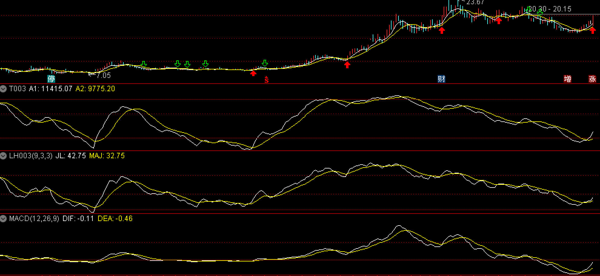

技术指标，大道至简
¶几个很复杂的技术指标和均线
我做了几个复杂的技术指标，动用了均值，权重，多周期，斐波那契数列等等我能想到的基础数学中一切知识。结果不止一次的论证了一件事情：均线系统是一个简单有效的技术指标，可以覆盖除了背离的大多数的情况。

图一是收盘价格5日、10均线；图二是量价的周期高低位数结合；图三是多周期 KDJ 的组合；图四是 MACD 线。
结果发现，这些线和5日、10日均线的交叉点和趋势的相关性非常非常高。
从图中我们可以看到，如果不考虑背离因素，5日和10日均线完全能能覆盖这些指标。
¶痴迷于指标对不对？
很多年来一直痴迷于收集指标，试图通过指标来找到一些规律。最终你会发现这些有效但又徒劳。
指标系统实际上是对过去的总结，并不能对未来做出预测，只能说未来出现某种可能的机率大一些。
毕竟股票价格是随时而且随机的，市场、情绪、外围等等可以影响价格的因素太多了。任何一点的风吹草动都可能对价格产生影响，这些影响会在当今信息化的时代被快速传播并放大，快速的反应到价格中。对于某一个信息点，不同人的产生不同的解读，从而导致价格的波动，如同一场地震，直到地震波消失，所有的交易者对当前价格达成一致。何同学的视频、李佳琦的带货会导致一个票瞬间涨停；商务部的一个建议储备食品的文件会引起军工股集体拉升（市场解读为要解放全中国），间接导致下午商务部为了辟谣而进一步解读文件。
市场上太多的消息是我们不知道的，以至于我们在为一个现象或者价格去找原因，无论这个原因是否有必然的关系，哪怕找不到关联消息，“涨多了”和“超跌反弹”也是对当下价格变动的一个解释。抛开那些我们未知的导致波动的因素，我们唯一能获取可靠的信息就是股票的价格和成交量。这些都是真实的、被市场充分解读过并达成一致的。我们相信对于市场的一切信息都会在价格中有所表现，通过量价体现出来，对于量价的解读，就只有指标了。
一段时间，我认为 KDJ 是有效的，钝化的时候又觉得 MACD 可靠，进而觉得 DMI 很科学，实际上每个指标都很科学也都有其局限性。大部分看起来非常好看的指标都是基于均线系统和区间价差比的变形。只不过最基本的输入是收盘价、平均价还是一个什么更复杂基于权重运算后的数字。最终你会发现这些指标有效，也无效。至于成功率，在49%~51%都是正常的。如果和这个数字偏离很多，那一定是你对于某个指标进行成功率拟合。这些拟合会导致与指标更复杂，直到最后，某一天，你发现某一个复杂的指标和均线、 MACD 或者 KDJ 高度相关了。
对于指标，我们应该痴迷，痴迷于指标所反应的信息，而指标本身，简单的或许就是最好的。
¶一个简单有效的指标
均线系统是简单到不能在简单的指标了，但是它真的有效。5日线和60日线就可以了。在复杂一些，就加上20日线好了。
强势的标的都会沿着5日线攀升，弱势的标的都会沿着5日线下跌。60日线可视为多空生命线。这中间你会发现你会漏掉很多机会，可是，这些机会是你能把握住的机会么？不要用过去去判断未来，虽然华尔街没有新鲜事。从现在去看过去，所有的指标都对。从现在去看未来？除了可能的趋势，你什么也看不到。